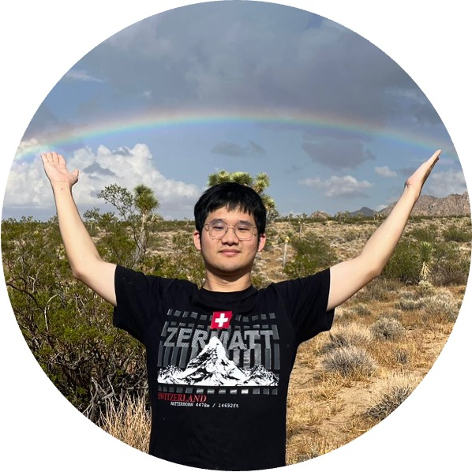
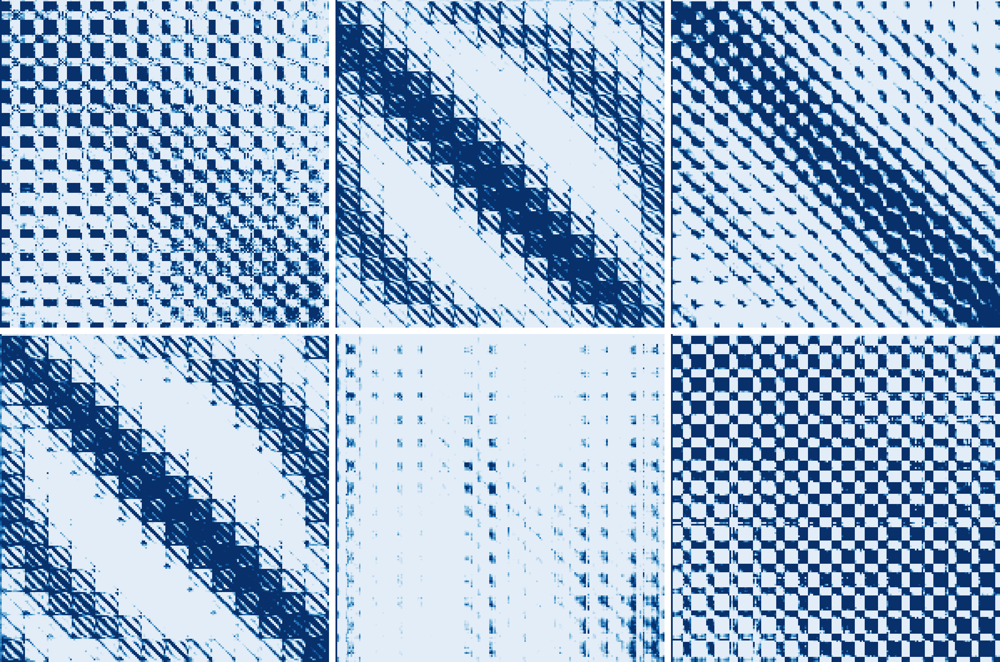
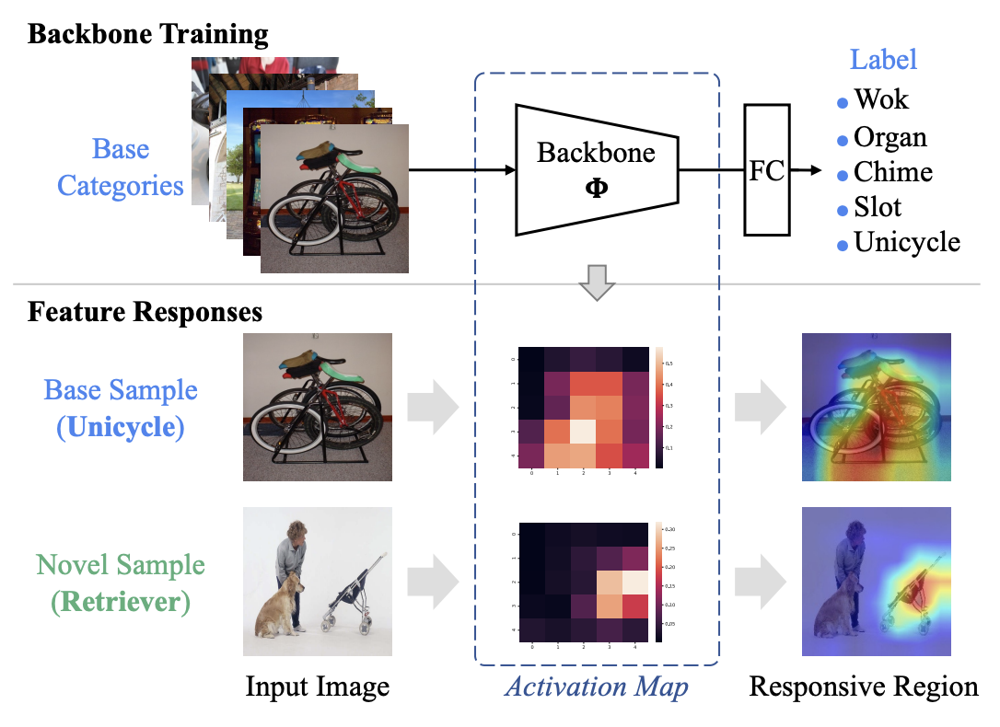

|
Haiyang "Daniel" Xu Hi! I am a senior undergraduate majoring in Data Science, at School of the Gifted Young (The Honor School), University of Science and technology of China (USTC). I am currently a research intern at UCSD, working with Prof. Zhuowen Tu. I have been fortunate to work with Prof. Xiangnan He and Dr. Shuo Wang at USTC. Besides, I was a research intern at Baidu Research, where I have been lucky to work with Dr. Dongliang He. I'm actively applying for a Ph.D. position in 2024 Fall! |
 |
{kind=link}
News[2024.02] 🎉 Our work BDM is accepted by CVPR 2024! 🎉 |
Research InterestMy research interests lie in the area of Machine Learning. I aspire to pioneer developments in Machine Learning that enhance machine perception and creativity, with the ultimate goal of crafting intelligent systems that are both profound in capability and universal in accessibility. |
Publications(* indicates equal contribution) |

|
Bayesian Diffusion Models for 3D Shape Reconstruction
Haiyang Xu*, Yu Lei*, Zeyuan Chen, Xiang Zhang, Yue Zhao, Yilin Wang, Zhuowen Tu CVPR, 2024 arXiv We propose Bayesian Diffusion Model (BDM) for 3D shape reconstruction, which performs effective Bayesian inference by tightly coupling the top-down (prior) information with the bottom-up (data-driven) procedure via joint diffusion processes. Our BDM could effectively capture the bayesian prior of 3D shapes and generate high-quality 3D shapes. |
|

|
Vision Transformer with Attention Map Hallucination and FFN
Compaction
Haiyang Xu, Zhichao Zhou, Dongliang He, Fu Li, Jingdong Wang arXiv We propose attention map hallucination and FFN compaction to alleviate the redundancy in ViTs, i.e., the similarities between attention maps and the low rank of FFN. |
|

|
Feature Mixture on Pre-Trained Model for Few-Shot
Learning
Shuo Wang, Jinda Lu, Haiyang Xu, Yanbin Hao, Xiangnan He submitted to IEEE Transactions on Image Processing (TIP) We propose a new feature mixture mechanism to improve the context extraction ability of the pre-trained model for few-shot learning. |
Honors
Outstanding Undergraduate Scholarship
(Top 5%), USTC, 2023
|
Useful Links
Yu Lei (@ SJTU) one of the most reliable collaborators on the Earth, glad to have my first publication with him 🤩 |
This is the source code stolen from Jon Barron. Thanks to him for sharing this beautiful template!